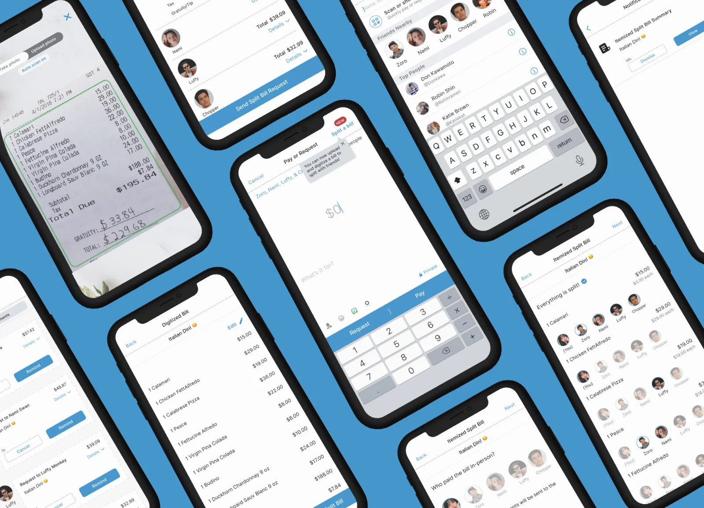
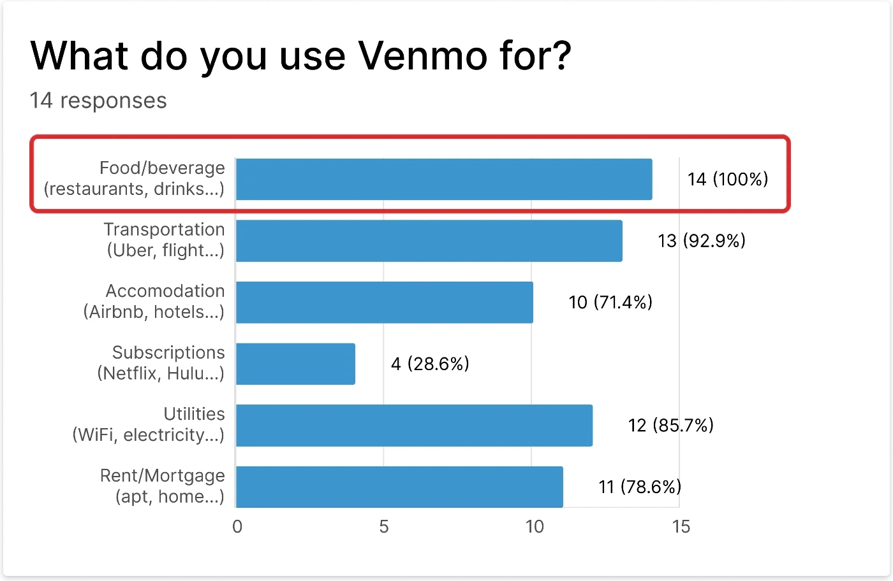
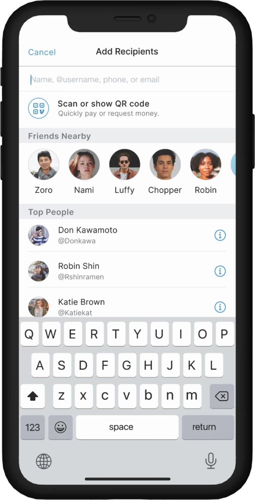
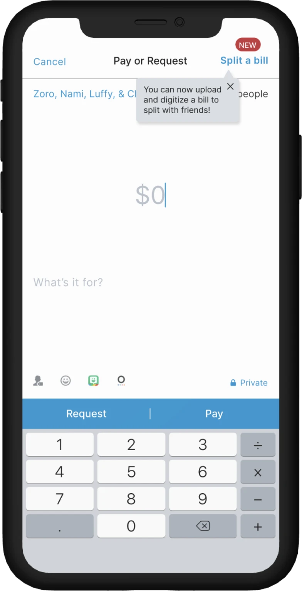
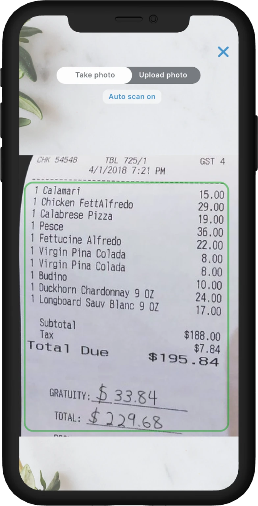
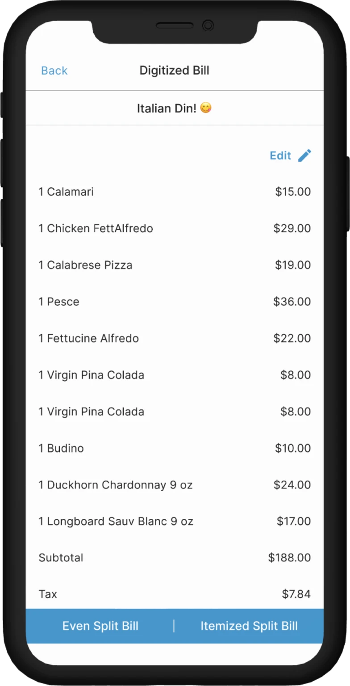
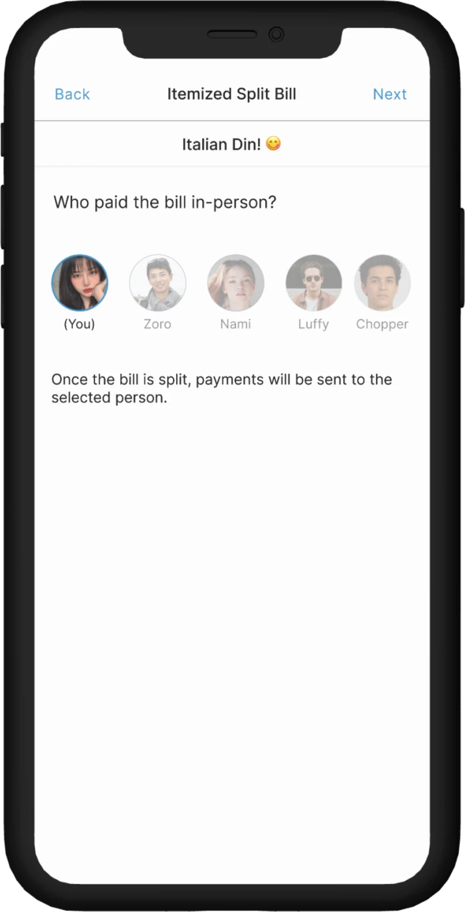
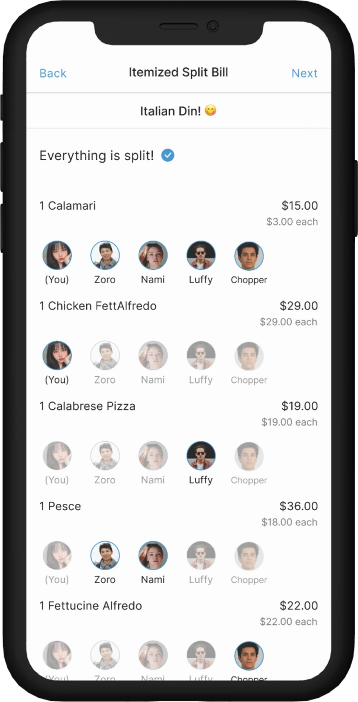
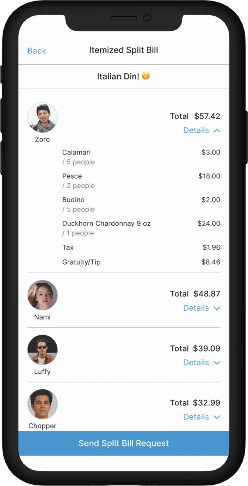
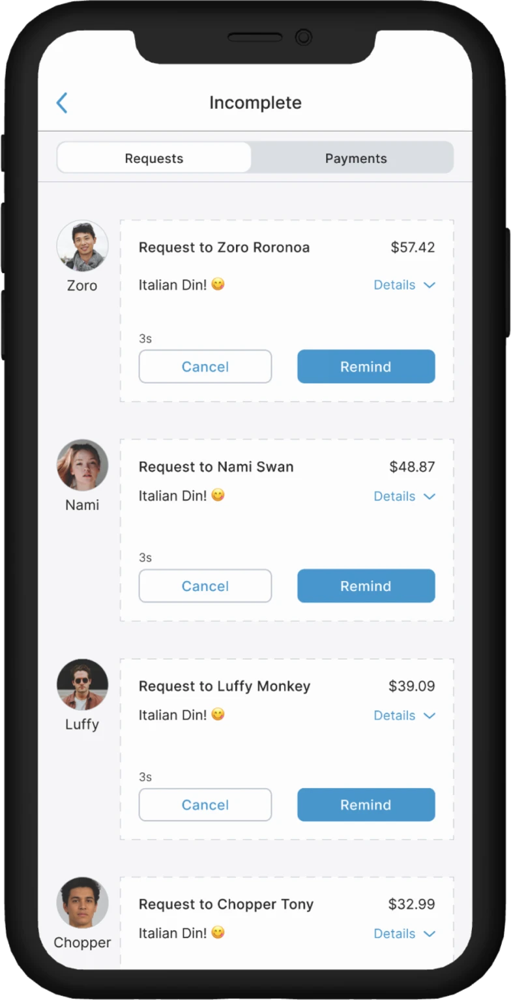

VENMO: ADDED FEATURE
Feature added to Venmo to help users easily split uneven shared bills

SUMMARY
Venmo is a mobile payment app that lets users send and receive money, pay bills, invest, and shop online.
I was the sole Product Designer and Researcher for this capstone project, where I designed an added feature for Venmo to support uneven bill splitting.
Initially, I explored a recurring charge feature based on the assumption that users, like myself, struggled to remember shared expenses like Wi-Fi, subscriptions, and utilities. However, early research quickly challenged that assumption, revealing that users were more frustrated by the lack of flexibility when splitting expenses unequally. I pivoted based on these insights, focusing the project on an uneven split bill feature to better align with user needs.
Background
Venmo is a mobile payment service owned by PayPal with over 80% of users being Millennials or Gen Z. These users share and split expenses such as rent, meals, subscriptions, utilities, and more via the Venmo app.
As a fellow Millennial Venmo user, every month I use Venmo to split expenses like wifi and subscriptions with my roommate. Both of our biggest pain point is not having a way to create recurring requests or payments through the app.
This led me to begin my capstone project with the assumption that there may be a need for a recurring payment feature among Millennials on Venmo.
Research
Upon doing research, I quickly found my original assumption was NOT validated. BUT 100% of the research participants split food/beverage bills on Venmo so I decided to pivot and research users’ experiences with splitting food/beverage bills further. I found 75% of participants were frustrated by not having an easy way to see and split bills (especially uneven bills) on Venmo. From these new insights, I revised my problem statement.

“It’s too complex to manage when splitting in large groups”
“I hate having to calculate how much each person owes through a separate app if different amounts”
The problem
Millennials need an easy way to split shared bills instantly on Venmo because it’s inefficient to do calculations outside Venmo and a slow process for everyone involved.
Final designs
Using a human-centered approach, I designed an added feature for Millennials to easily split uneven shared bills on Venmo’s mobile app. 5 out of 5 people I usability tested the feature with found it useful and convenient.








Prototype
Feel free to interact with it!
Impact
If this were a live feature shipped, I would measure the success through KPIs like: how long it takes users to adopt the new feature upon learning about it, percentage of total active users using the new feature, how often key users engage with new feature (as intended), and how long users continue to use the new feature after learning about it.
Reflection
It’s ok to make assumptions, but be open to letting go
Since I was frustrated with having to retype and recreate recurring WiFi and subscription payments with my roommate, I assumed that a good majority of users would also have similar frustrations, but through user research, my assumption was not validated. Although it was sad to have to let go of solving the recurring payment problem, I learned to let go and pivot.
Really listen to users
It can be easy to want to lead questions, especially when having assumptions or biases, but UX is about uncovering truths, not choosing what I want to hear to confirm my assumptions. Listening to users openly and objectively while reading in between the lines during research/testing, along with the lesson I learned above, will better guide me towards solving legitimate problems that have greater value to users and businesses.